Tout les types de 2Cv
Presentation du site.
Ceci est un site qui montre les différentes versions de la 2cv qui ont existé depuis que cette belle voiture a été créée.
Il aide les gens qui ne connaissent pas les 2cv ou qui veulent en savoir plus sur cette voiture.
Pour découvrir les détails sur les différentes voitures, il vous suffit de cliquer sur les onglets en haut de cette page et de profiter des infos disponibles.

Les images pour certaines on été prises sur des site de 2cv :
- 2cv-legende.com
- lesAnciennes.com
- L'argus.com
- Palais-de-la-Voiture.com
- Bonjourlavieille.com
- 2CVgarage.com
- Citroënvie!.com
- Bond Lifestyle.com
- autoencyclopedie.com
- Terranea Seguros - Terránea.com
2CV A (1948–1959)

La 2CV A est le tout premier modèle commercialisé par Citroën.
Présentée au Salon de l’Auto de Paris en 1948, elle a été conçue comme une voiture simple,
économique et accessible aux agriculteurs et aux familles modestes.
Le contexte de la création de cette voiture.
Avant la guerre, le projet secret appelé TPV (Toute Petite Voiture) visait à créer :
« Une voiture capable de transporter 4 personnes et 50 kg de pommes de terre à 60 km/h, en consommant très peu. »
La 2CV A est l’aboutissement de ce projet.
Caractéristiques techniques
| Attribut | Détail |
|---|---|
| Pays | France |
| Moteur | 2 cylindres à plat, refroidissement par air |
| Cylindrée | 375 cm3 |
| Puissance | 9 ch |
| Vitesse max | ~60 km/h |
| Transmission | 4 vitesses manuelles |
| Poids | ~580 kg |
| Carburant | Essence |
Design et particularités
- Une seule couleur au début : gris clair
- Sièges en toile amovibles
- Toit en toile repliable (jusqu’au pare-chocs arrière)
- Essuie-glaces entraînés par le câble du compteur
- Pas de jauge à essence au début
- Démarrage à la manivelle possible
Ultra minimaliste !
Suspension révolutionnaire
Les suspensions étaient très souples et permettaient
donc de traverser un champ sans casser des oeufs qui
se trouvaient à l'intérieur de la voiture.
Elle permettaient
également de pouvoir rouler sur des routes très mauvaise sans casser la voiture.
C’est ce qui a rendu la 2CV célèbre pour son confort incroyable malgré sa simplicité!
Ce qui a fait le succès de cette voiture.
Au début, elle est moquée pour son apparence, mais très vite, elle devient la voiture de la campagne française et un symbole de liberté et d'économie.
La fin de la 2CV A
En 1954, la version AZ (425 cm³) apparaît, la 2CV A disparaît progressivement pour laisser place aux modèles plus puissants.
2CV AZ (1954–1963)

Présentation générale.
La Citroën 2CV AZ, produite de 1954 a 1963, est une voiture légère et économique, conçue pour la simplicité et la robustesse.
Son moteur bicylindre et sa suspension souple en font une voiture fiable, capable de transporter passagers et
chargement même sur les routes les plus difficiles.
Symbole de l’ingéniosité populaire de Citroën, elle reste un classique intemporel.
Caractéristiques techniques
| Attribut | Détail |
|---|---|
| Pays | France |
| Moteur | 2 cylindres à plat, refroidissement par air |
| Cylindrée | 425 cm3 |
| Puissance | 12 ch à 4 000 tr/min |
| Vitesse max | ~65 km/h |
| Transmission | 4 vitesses manuelles |
| Poids | ~600 kg |
| Carburant | Essence |
Évolutions et particularités par rapport à la 2CV A
- Moteur amélioré : 425 cm3 contre 375 cm3 sur la 2CV A : plus de puissance
- Capacité de chargement : meilleure suspension : plus pratique pour campagne
- Freins : amélioration du freinage avec tambours plus grands
- Carrosserie : toujours très simple, capote en toile, mais plus solide et plus fonctionnelle
- Design : lignes identiques à la 2CV A mais avec quelques finitions supplémentaires
- Couleurs : Gris, vert et bleu selon les années
Faits marquants.
La 2CV AZ a été la première version vraiment populaire de la 2CV après la 2CV A expérimentale.
Très utilisée à la campagne, elle pouvait transporter 4 personnes et un panier d’œufs sans les casser – grâce à sa suspension souple.
Sa simplicité mécanique la rendait facile à réparer, ce qui a contribué à sa popularité mondiale.
2CV AZL (1957–1960)

Présentation générale.
La Citroën 2CV AZL (1957–1960) est une version allongée et plus confortable de la 2CV AZ.
Elle conserve la légèreté, la simplicité et la robustesse de la 2CV tout en offrant
plus d’espace pour les passagers arrière.
Sa suspension souple et son moteur économique en
font une voiture fiable et pratique, idéale pour la campagne et les trajets familiaux.
Symbole
de l’ingéniosité populaire de Citroën, elle reste un classique apprécié des collectionneurs.
Caractéristiques techniques
| Attribut | Détail |
|---|---|
| Pays | France |
| Moteur | 2 cylindres à plat, refroidissement par air |
| Cylindrée | 425 cm3 |
| Puissance | 12 ch |
| Vitesse max | ~65 km/h |
| Transmission | 4 vitesses manuelles |
| Poids | ~600 kg |
| Carburant | Essence |
Évolutions et particularités de la 2cv AZL
- Long empattement : l’AZL a un empattement légèrement plus long que la 2CV AZ classique : plus d’espace intérieur.
- Capacité améliorée : meilleure habitabilité et confort pour les passagers arrière.
- Design : identique à l’AZ mais avec quelques ajustements pour le confort.
- Suspension souple : idéale pour les routes rurales, signature de la 2CV.
- Couleurs : plusieurs couleurs disponibles, notamment gris, vert et bleu.
Faits marquants.
L’AZL a été conçue pour offrir plus de confort à quatre passagers tout en conservant la simplicité et la robustesse de la 2CV.
Très populaire dans les campagnes françaises et souvent utilisée pour le transport familial léger.
Son empattement plus long la distingue facilement visuellement des AZ classiques.
2CV AZLP (1957–1963)
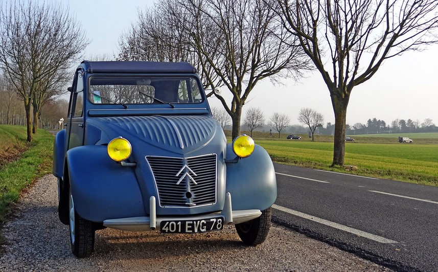
Présentation générale.
La 2CV AZLP est une version intermédiaire et pratique de la 2CV,
produite à la fin des années 1950.
Elle se situe entre la 2CV
AZ standard et les modèles plus confortables comme la AZL ou
AZAM.
Sa particularité principale est la porte arrière rigide
(porte de malle) qui facilite l’accès au coffre, tout en
conservant la simplicité, l’économie et la robustesse
caractéristiques de la Deux Chevaux.
Caractéristiques techniques
| Attribut | Détail |
|---|---|
| Pays | France |
| Moteur | 2 cylindres à plat, refroidissement par air |
| Cylindrée | 425 cm3 |
| Puissance | 12 ch |
| Vitesse max | ~65-70 km/h |
| Transmission | 4 vitesses manuelles |
| Poids | ~600-620 kg |
| Carburant | Essence |
Évolutions et particularités de la 2cv AZLP
- Version intermédiaire avec finition AZL et porte arrière rigide (P = porte de malle).
- Finitions légèrement plus élégantes que la AZ standard.
- Idéale pour un usage pratique tout en bénéficiant d’un confort léger supplémentaire.
- Transition entre les premières 2CV des années 1950 et les modèles modernisés du début des années 1960.
Faits marquants.
Introduit la porte de malle pour faciliter l’accès au coffre.
Version plus confortable que la AZ, mais toujours simple et économique.
Produit de 1957 à 1963, à la charnière entre les modèles classiques et modernisés.
Très recherchée par les collectionneurs pour son originalité et son intérêt historique.
2CV AZAM (1960–1963)

Présentation générale.
La Citroën 2CV AZAM (1960–1963) est une version intermédiaire de la 2CV AZ,
offrant un meilleur confort et des finitions légèrement améliorées.
Elle conserve la légèreté, la simplicité et la robustesse emblématiques de la 2CV,
tout en restant pratique pour le transport familial ou les trajets en campagne.
Polyvalente et fiable, elle reste un modèle apprécié par les collectionneurs et amateurs de voitures classiques.
Caractéristiques techniques
| Attribut | Détail |
|---|---|
| Pays | France |
| Moteur | 2 cylindres à plat, refroidissement par air |
| Cylindrée | 425 cm3 |
| Puissance | 12 ch |
| Vitesse max | ~65 km/h |
| Transmission | 4 vitesses manuelles |
| Poids | ~600 kg |
| Carburant | Essence |
Particularités de la version AZAM
- Moteur amélioré : plus fiable que la 2CV AZ classique.
- Confort renforcé : sièges plus moelleux et meilleures finitions intérieures.
- Capote longue : toujours pratique pour le transport léger et la protection contre la pluie.
- Équipement léger : version intermédiaire entre la 2CV AZ standard et les modèles plus luxueux de l’époque.
- Couleurs : disponibles en gris, vert et bleu selon les années.
Faits marquants.
L’AZAM a été conçue pour offrir un meilleur confort à bord tout en conservant la simplicité et la robustesse caractéristiques de la 2CV.
Elle servait souvent de voiture familiale économique et fiable, très populaire dans les campagnes françaises.
Elle représente une étape entre la 2CV AZ classique et les versions plus évoluées comme la 2CV AZL ou AZLP.
2CV 4 (1970–1979)

Présentation générale.
La Citroën 2CV 4 (1970–1979) est une version améliorée de la 2CV,
équipée d’un moteur plus puissant et offrant un confort renforcé.
Légère, simple et robuste, elle reste fidèle à l’esprit de la 2CV
tout en s’adaptant aux routes plus rapides et aux usages familiaux.
Polyvalente et fiable, elle a marqué les années 70 et demeure un classique apprécié des collectionneurs.
Caractéristiques techniques
| Attribut | Détail |
|---|---|
| Pays | France |
| Moteur | 2 cylindres à plat, refroidissement par air |
| Cylindrée | 435 cm3 |
| Puissance | 17 ch |
| Vitesse max | ~100 km/h |
| Transmission | 4 vitesses manuelles |
| Poids | ~650 kg |
| Carburant | Essence |
Particularités de la version 2CV 4
- Plus de puissance : moteur 435 cm3 offrant 17 ch, mieux adapté aux routes plus rapides.
- Freins améliorés : tambours plus efficaces pour une sécurité renforcée.
- Finitions légèrement modernisées : tableau de bord simplifié, intérieur plus confortable.
- Suspension souple : toujours conçue pour le confort sur routes rurales ou irrégulières.
- Couleurs variées : plusieurs teintes disponibles, ce qui en fait un modèle très identifiable dans les années 70.
Faits marquants.
La 2CV 4 est l’une des versions les plus vendues de la 2CV.
Très populaire comme voiture familiale économique et polyvalente.
Son moteur plus puissant et son confort amélioré la rapprochent de l’usage urbain moderne tout en conservant l’esprit « campagne » de la 2CV.
2CV 6 (1970–1990)

Présentation générale.
La Citroën 2CV 6 (1970–1990) est la version la plus puissante et la plus durable de la 2CV.
Avec son moteur 602 cm3 et son confort amélioré, elle conserve la légèreté et la robustesse
emblématiques de la 2CV tout en offrant de meilleures performances.
Polyvalente et fiable,
elle a marqué deux décennies et reste aujourd’hui un modèle incontournable pour les
amateurs et collectionneurs de voitures classiques.
Caractéristiques techniques
| Attribut | Détail |
|---|---|
| Pays | France |
| Moteur | 2 cylindres à plat, refroidissement par air |
| Cylindrée | 602 cm3 |
| Puissance | 29 ch |
| Vitesse max | ~105 km/h |
| Transmission | 4 vitesses manuelles |
| Poids | ~650-680 kg |
| Carburant | Essence |
Particularités de la version 2CV 6
- Moteur plus puissant : 602 cm3 : permet de meilleures performances et une vitesse maximale plus élevée.
- Freins améliorés : plus efficaces pour une conduite sécurisée.
- Finitions améliorées : tableau de bord plus complet, sièges confortables, options supplémentaires selon les années.
- Suspension souple : toujours emblématique, adaptée aux routes rurales ou accidentées.
- Polyvalence : version largement utilisée pour la famille, le travail léger et le loisir.
- Couleurs variées : très large palette de couleurs au fil des années, souvent utilisée comme voiture de collection.
Faits marquants.
La 2CV 6 est la version la plus vendue et produite sur la plus longue période.
Elle a marqué la fin de l’ère de la 2CV classique avant la fermeture progressive de la production dans les années 90.
Très populaire pour son confort relatif et sa robustesse, elle reste le modèle le plus recherché par les collectionneurs.
2CV SPOT (1976)

Présentation générale.
La Citroën 2CV Spot (1976) est une édition spéciale limitée de la 2CV 6,
reconnaissable à sa peinture bicolore originale et ses motifs « Spot ».
Elle conserve la légèreté, la simplicité et la robustesse emblématiques
de la 2CV, tout en offrant une touche unique et ludique.
Très rare aujourd’hui, elle est prisée des collectionneurs pour
son style distinctif et son exclusivité.
Caractéristiques techniques
| Attribut | Détail |
|---|---|
| Pays | France |
| Moteur | 2 cylindres à plat, refroidissement par air |
| Cylindrée | 602 cm3 |
| Puissance | 29 ch |
| Vitesse max | ~105 km/h |
| Transmission | 4 vitesses manuelles |
| Poids | ~650 kg |
| Carburant | Essence |
Particularités de la 2CV Spot
- Édition spéciale limitée : produite uniquement en 1976, peu d’exemplaires fabriqués.
- Finition unique : peinture bicolore avec des motifs originaux « Spot » sur la carrosserie, souvent en jaune et noir ou rouge et noir selon les modèles.
- Equipements : mêmes caractéristiques mécaniques que la 2CV 6 mais avec des détails esthétiques exclusifs (logos, sellerie, capote).
- Collection : très recherchée aujourd’hui par les amateurs de 2CV et les collectionneurs.
Faits marquants.
La 2CV Spot n’a été produite qu’en très petite série et reste l’une des éditions spéciales les plus originales de la 2CV.
Son style unique et son exclusivité en font une pièce rare pour les expositions et collections.
Symbole du côté ludique et créatif que Citroën pouvait apporter à la gamme 2CV.
2CV Charleston (1980–1990)

Présentation générale.
La Citroën 2CV Charleston (1980–1990) est une édition spéciale
élégante et bicolore de la 2CV 6, reconnaissable à ses couleurs
noir et rouge ou noir et jaune et à ses finitions soignées.
Elle conserve la légèreté, la simplicité et la robustesse
emblématiques de la 2CV tout en offrant un style rétro-chic unique.
Très prisée par les collectionneurs, elle reste un symbole des
dernières années de production de la 2CV.
Caractéristiques techniques
| Attribut | Détail |
|---|---|
| Pays | France |
| Moteur | 2 cylindres à plat, refroidissement par air |
| Cylindrée | 602 cm3 |
| Puissance | 29 ch |
| Vitesse max | ~105 km/h |
| Transmission | 4 vitesses manuelles |
| Poids | ~650 kg |
| Carburant | Essence |
Particularités de la 2CV Charleston
- Édition spéciale bicolore : couleurs très reconnaissables, souvent noir et rouge ou noir et jaune avec motifs Charleston.
- Finition élégante : sellerie spécifique, logos « Charleston » et capote assortie.
- Confort amélioré : même mécanique que la 2CV 6 mais avec des détails esthétiques et intérieurs plus soignés.
- Collection : très prisée pour son style rétro-chic et son exclusivité, elle est devenue un symbole des dernières années de production de la 2CV.
Faits marquants.
La 2CV Charleston est l’une des éditions spéciales les plus populaires et reconnaissables de la 2CV.
Son style unique et ses finitions raffinées en font une voiture recherchée par les collectionneurs et amateurs de voitures classiques.
Elle représente l’apogée du design « fun » et élégant de la 2CV avant la fin de sa production en 1990.
2CV Dolly (1985–1986)

Présentation générale.
La Citroën 2CV Dolly (1985–1986) est une édition spéciale
limitée et colorée de la 2CV 6, reconnaissable à sa carrosserie
bicolore et à ses motifs ludiques.
Elle conserve la légèreté,
la simplicité et la robustesse emblématiques de la 2CV tout
en offrant un style original et fun.
Très rare aujourd’hui,
elle est très prisée des collectionneurs pour son exclusivité et son design unique.
Caractéristiques techniques
| Attribut | Détail |
|---|---|
| Pays | France |
| Moteur | 2 cylindres à plat, refroidissement par air |
| Cylindrée | 602 cm3 |
| Puissance | 29 ch |
| Vitesse max | ~105 km/h |
| Transmission | 4 vitesses manuelles |
| Poids | ~650 kg |
| Carburant | Essence |
Particularités de la 2CV Dolly
- Édition très colorée et fun : carrosserie bicolore, souvent bleu/blanc ou rouge/blanc avec motifs décoratifs uniques.
- Finitions spécifiques : sellerie colorée et motifs exclusifs « Dolly », logos distinctifs sur les ailes et la calandre.
- Confort et mécanique : mêmes caractéristiques que la 2CV 6, mais avec un look plus ludique et original.
- Exclusivité : produite en série limitée : très recherchée par les collectionneurs.
Faits marquants.
La 2CV Dolly est l’une des dernières éditions spéciales produites avant la fin progressive de la 2CV.
Elle incarne le côté ludique et créatif de Citroën dans les années 1980.
Son style unique et sa rareté en font un modèle très apprécié des amateurs de 2CV et des collectionneurs.
2CV France 3 (1983)

Présentation générale.
La Citroën 2CV France 3 (1983) est une édition spéciale limitée
créée pour célébrer le partenariat avec la chaîne de télévision France 3.
Avec sa carrosserie bicolore bleu et blanc et ses motifs exclusifs,
elle conserve la légèreté, la simplicité et la robustesse de la 2CV
tout en offrant un style original et rare.
Très recherchée aujourd’
hui par les collectionneurs, elle symbolise la créativité et le
caractère ludique des dernières éditions spéciales de la 2CV.
Caractéristiques techniques
| Attribut | Détail |
|---|---|
| Pays | France |
| Moteur | 2 cylindres à plat, refroidissement par air |
| Cylindrée | 602 cm3 |
| Puissance | 29 ch |
| Vitesse max | ~105 km/h |
| Transmission | 4 vitesses manuelles |
| Poids | ~650 kg |
| Carburant | Essence |
Particularités de la 2CV France 3
- Édition limitée : produite en 1983 pour célébrer le partenariat avec la chaîne de télévision française France 3.
- Design exclusif : carrosserie bicolore bleu/blanc avec logos et motifs « France 3 » sur les ailes et le coffre.
- Finitions spécifiques : sellerie et détails intérieurs assortis aux couleurs de la carrosserie.
- Mécanique classique : identique à la 2CV 6, simple et fiable.
- Collection : très recherchée par les collectionneurs pour son rareté et son lien culturel.
Faits marquants.
La 2CV France 3 est une édition commémorative très rare, produite en très petite série.
Son design unique et son exclusivité en font un modèle prisé pour les expositions et les collections.
Elle symbolise la créativité et le côté ludique des dernières éditions spéciales de la 2CV.
2CV Cocorico (1986)

Présentation générale.
La Citroën 2CV Cocorico (1986) est une édition spéciale limitée
et tricolore de la 2CV 6, reconnaissable à ses motifs bleu, blanc
et rouge et à ses logos « Cocorico ».
Elle conserve la légèreté,
la simplicité et la robustesse emblématiques de la 2CV tout en
offrant un style original et patriotique.
Très rare et recherchée,
elle est aujourd’hui un modèle prisé des collectionneurs pour son
originalité et son caractère unique.
Caractéristiques techniques
| Attribut | Détail |
|---|---|
| Pays | France |
| Moteur | 2 cylindres à plat, refroidissement par air |
| Cylindrée | 602 cm3 |
| Puissance | 29 ch |
| Vitesse max | ~105 km/h |
| Transmission | 4 vitesses manuelles |
| Poids | ~650 kg |
| Carburant | Essence |
Particularités de la 2CV Cocorico
- Édition limitée : produite en 1986 pour célébrer les couleurs et le symbole de la France (le coq).
- Design distinctif : carrosserie tricolore bleu/blanc/rouge avec motifs « Cocorico » sur les ailes et le coffre.
- Finitions spécifiques : sellerie assortie, logos exclusifs, capote adaptée aux couleurs.
- Mécanique classique : identique à la 2CV 6, fiable et simple.
- Collection : très recherchée par les collectionneurs pour son originalité et son côté patriotique.
Faits marquants.
La 2CV Cocorico symbolise le côté festif et créatif des dernières éditions spéciales de la 2CV.
Son design tricolore et sa rareté en font un modèle incontournable pour les passionnés et les collectionneurs.
Elle représente un clin d’œil à l’identité française dans la gamme des dernières 2CV.
2CV Club (1979-1988)
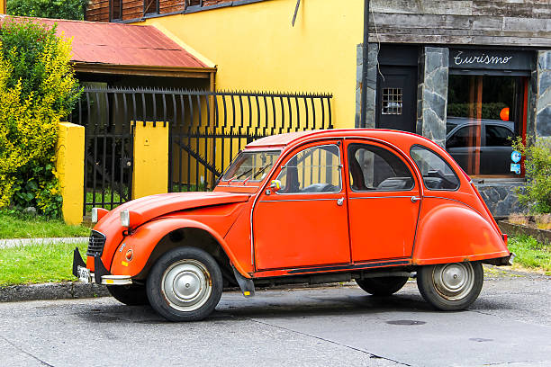
Présentation générale.
La Citroën 2CV Club est une version plus soignée de la
célèbre Deux Chevaux, apparue à la fin des années 1970.
Positionnée au-dessus de la 2CV Spécial, elle se distingue
par une présentation plus moderne, des équipements
améliorés et un confort légèrement supérieur.
Tout en conservant l’esprit simple et pratique
de la 2CV, la version Club représente l’une des
finitions les plus abouties de la gamme avant la
fin de production.
Caractéristiques techniques
| Attribut | Détail |
|---|---|
| Pays | France |
| Moteur | 2 cylindres à plat, refroidissement par air |
| Cylindrée | 602 cm3 |
| Puissance | 29 ch |
| Vitesse max | ~110-115 km/h |
| Transmission | 4 vitesses manuelles |
| Poids | ~735 kg |
| Carburant | Essence |
Particularités de la 2CV Club
- Phares rectangulaires caractéristiques, qui modernisent légèrement le look.
- Badge “Club” sur la malle arrière pour identifier la finition.
- Intérieur plus soigné avec des garnitures et matériaux légèrement améliorés.
- Capote ouvrable facilement depuis l’intérieur, fidèle au concept 2CV.
- Tableau de bord élargi (type Ami 6) pour plus de visibilité et de praticité.
- Confort amélioré sur les sièges et la suspension, tout en gardant la simplicité mécanique de la 2CV.
Faits marquants.
Version haut de gamme de la 2CV classique : apparue à la fin des années 1970 pour remplacer la Spécial en tant que finition plus confortable et soignée.
Design légèrement modernisé : phares rectangulaires, tableau de bord élargi et intérieur amélioré.
Confort accru : sièges et suspension légèrement optimisés tout en conservant la simplicité et la robustesse de la 2CV.
Commercialisation étendue : vendue principalement en France et dans plusieurs pays européens, avec une popularité durable.
Dernières années de la 2CV classique : la Club fait partie des modèles produits avant l’arrêt de la 2CV en 1990, marquant la fin d’une ère pour la mythique Deux Chevaux.
2CV Spécial (1970-1990)

Présentation générale.
La 2CV Spécial est une version simple et économique de la 2CV,
produite à partir de la fin des années 1970.
Elle conserve l
’esprit pratique et minimaliste de la Deux Chevaux, avec un
intérieur sobre et un équipement réduit.
Destinée à un usage
quotidien et fonctionnel, elle offre la fiabilité et la
maniabilité légendaires de la 2CV, tout en restant très abordable.
Caractéristiques techniques
| Attribut | Détail |
|---|---|
| Pays | France |
| Moteur | 2 cylindres à plat, refroidissement par air |
| Cylindrée | 602 cm3 |
| Puissance | 29 ch |
| Vitesse max | ~110 km/h |
| Transmission | 4 vitesses manuelles |
| Poids | ~720-750 kg |
| Carburant | Essence |
Particularités de la 2CV Spécial
- Version d’entrée de gamme, sobre et fonctionnelle.
- Intérieur minimaliste avec peu de garnitures et équipements.
- Capote ouvrable pour conserver l’esprit 2CV classique.
- Mécanique simple et fiable, facile à entretenir.
- Conçue pour la praticité et l’économie plutôt que pour le confort ou le style.
Faits marquants.
Version la plus accessible de la 2CV dans les années 1970-80.
Économie et simplicité : idéale pour un usage quotidien avec un budget limité.
Dernières versions avant la fin de la production : elle a coexisté avec les versions Club et les séries limitées comme Charleston ou Dolly.
Robustesse et fiabilité : fidèle à la réputation de la Deux Chevaux pour la longévité et la maniabilité.
2CV Perrier (1988)

Présentation générale.
La Citroën 2CV Perrier (1988) est une édition spéciale limitée réalisée
en collaboration avec la marque de boissons Perrier.
Reconnaissable à
sa carrosserie verte et jaune et à ses logos exclusifs, elle conserve
la légèreté, la simplicité et la robustesse de la 2CV tout en affichant
un style original et ludique.
Très rare, elle est aujourd’hui un
modèle prisé des collectionneurs pour son design unique et son exclusivité.
Caractéristiques techniques
| Attribut | Détail |
|---|---|
| Pays | Belgique |
| Moteur | 2 cylindres à plat, refroidissement par air |
| Cylindrée | 602 cm3 |
| Puissance | 29 ch |
| Vitesse max | ~105 km/h |
| Transmission | 4 vitesses manuelles |
| Poids | ~650 kg |
| Carburant | Essence |
Particularités de la 2CV Perrier
- Édition limitée : produite en 1988 en collaboration avec la marque de boissons Perrier.
- Design unique : carrosserie verte et jaune avec logos et motifs Perrier sur les ailes et le coffre.
- Finitions spécifiques : sellerie assortie aux couleurs de l’édition, capote standard.
- Mécanique classique : identique à la 2CV 6, fiable et simple.
- Collection : très rare et recherchée pour son originalité et son lien avec la marque.
Faits marquants.
La 2CV Perrier est une des dernières éditions spéciales de la 2CV avant la fin de sa production.
Son style coloré et sa rareté en font un modèle très apprécié des collectionneurs et amateurs de voitures originales.
Elle reflète le côté ludique et publicitaire que Citroën a parfois exploré dans ses éditions limitées.
2CV Ente Grün (1986)
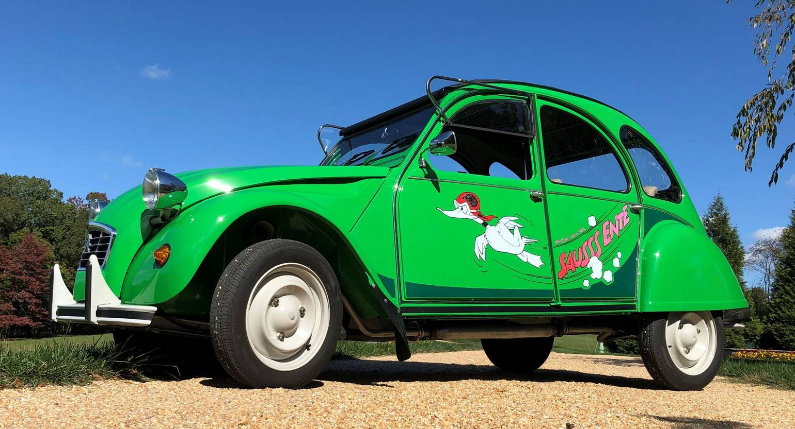
Présentation générale.
La 2CV Ente Grün / I Fly Bleifrei est une série spéciale originale de la 2CV
produite dans les années 1980, destinée principalement aux marchés
allemand et suisse.
Elle se distingue par sa teinte verte caractéristique
et ses inscriptions humoristiques « I Fly Bleifrei », mettant en avant
l’usage d’essence sans plomb.
Elle conserve la mécanique classique de
la 2CV tout en ajoutant une touche esthétique et symbolique, reflétant
la transition écologique de l’époque.
Caractéristiques techniques
| Attribut | Détail |
|---|---|
| Pays | Allemagne et Suisse |
| Moteur | 2 cylindres à plat, refroidissement par air |
| Cylindrée | 602 cm3 |
| Puissance | 29 ch |
| Vitesse max | ~95-100 km/h |
| Transmission | 4 vitesses manuelles |
| Poids | ~720-740 kg |
| Carburant | Essence sans plomb |
Particularités de la 2CV Ente Grün
- Série spéciale avec teinte verte distinctive et logos « I Fly Bleifrei ».
- Décor et surnom « Ente » (canard) sur la carrosserie.
- Basée sur la 2CV6 Spécial ou Club selon le marché.
- Édition humoristique et symbolique pour promouvoir l’usage de carburant sans plomb.
- Très recherchée par les collectionneurs pour son originalité et son design unique.
Faits marquants.
Série spéciale introduite pour sensibiliser au carburant sans plomb.
Esthétique unique avec couleur verte et inscriptions humoristiques.
Produit dans les années 1980 pour les marchés germanophones.
Modèle apprécié des collectionneurs pour son caractère rare et symbolique.
2CV BAMBOO (1987)
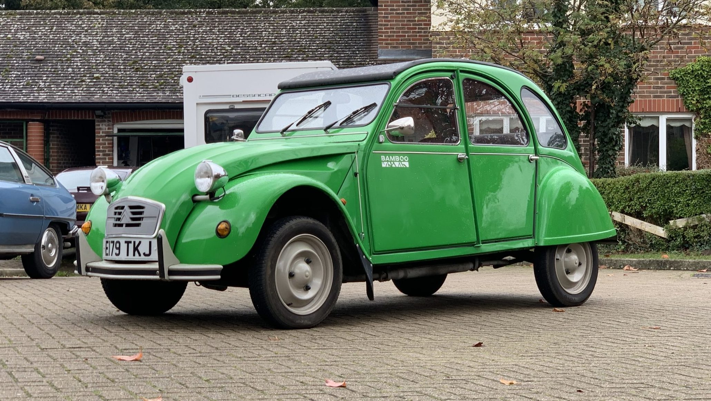
Présentation générale.
La 2CV Bamboo est une série spéciale de la Citroën 2CV créée pour
le marché britannique à la fin de la production des Deux Chevaux.
Elle se distingue avant tout par sa couleur « Vert Bambou » très
caractéristique et quelques détails esthétiques spécifiques.
Cette édition n’apporte pas de modifications mécaniques majeures,
mais elle offre une présentation unique qui la rend recherchée
des amateurs et des collectionneurs.
Caractéristiques techniques
| Attribut | Détail |
|---|---|
| Pays | Royaume-Uni |
| Moteur | 2 cylindres à plat, refroidissement par air |
| Cylindrée | 602 cm3 |
| Puissance | 29 ch |
| Vitesse max | ~95-100 km/h |
| Transmission | 4 vitesses manuelles |
| Poids | ~720-740 kg |
| Carburant | Essence |
Particularités de la 2CV Bamboo
- Série spéciale baptisée « Bamboo » pour sa peinture vert bambou distinctive.
- Décor et inscriptions spécifiques « Bamboo » sur la carrosserie.
- Généralement basée sur une 2CV6 Spécial avec certaines options d’équipement local.
- Très recherchée par les collectionneurs pour sa rareté et son aspect original.
Faits marquants.
Édition limitée produite spécifiquement pour le Royaume‑Uni à la fin des années 1980.
Elle se reconnaît immédiatement à sa teinte verte unique « Vert Bambou » et à ses autocollants Bamboo.
Ce modèle est l’une des dernières séries spéciales avant l’arrêt définitif de la production de la 2CV.
Très appréciée aujourd’hui par les passionnés et collectionneurs pour son caractère distinctif.
2CV 007 (1981)
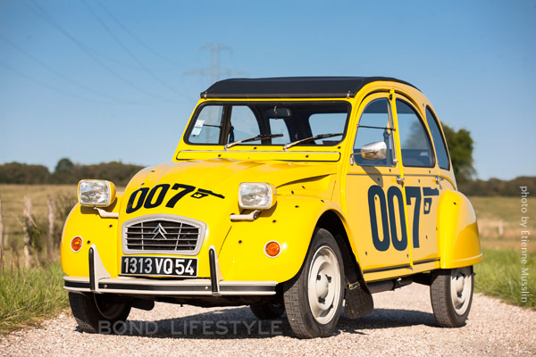
Présentation générale.
La 2CV 007 est une série limitée inspirée de
l’apparition de la Citroën 2CV dans le film James
Bond – Rien que pour vos yeux (For Your Eyes Only, 1981).
Pour profiter de cette mise en avant cinématographique,
Citroën a lancé une édition spéciale basée sur la 2CV6 Spécial,
reconnaissable à sa couleur jaune Hélios, ses logos “007” et ses
autocollants représentant des impacts de balles, pour rappeler la
célèbre scène de poursuite.
Caractéristiques techniques
| Attribut | Détail |
|---|---|
| Pays | Grande-Bretagne |
| Moteur | 2 cylindres à plat, refroidissement par air |
| Cylindrée | 602 cm3 |
| Puissance | puissance adaptée à une conduite tranquille et économique |
| Vitesse max | performances similaires à celles d’une 2CV6 Spécial classique |
| Transmission | 4 vitesses manuelles |
| Poids | comparable à celui d’une 2CV6 Spécial standard |
| Carburant | Essence |
Particularités de la 2CV 007
- Série spéciale « 007 » inspirée du rôle de la 2CV dans un film de James Bond.
- Carrosserie jaune Hélios avec décorations spécifiques, logos et autocollants d’impact de balles à poser.
- Basée sur la 2CV6 Spécial, sans grandes modifications mécaniques, mais avec un habillage thématique très reconnaissable.
- Très rare et recherchée par les collectionneurs en raison de son nombre limité et de son lien direct avec la saga James Bond.
Faits marquants.
Lancée pour coïncider avec la sortie du film James Bond – Rien que pour vos yeux en 1981.
Série limitée produite en très petit nombre (environ 500 exemplaires pour la France et un nombre similaire pour le Royaume‑Uni),
ce qui en fait une des éditions spéciales les plus rares de la 2CV.
Présentée lors d’un événement Citroën à Paris en octobre 1981, avec une visibilité médiatique notable.
Aujourd’hui, les modèles authentiques originaux sont fortement recherchés par les collectionneurs de voitures classiques.
2CV Marcatelo (1982)
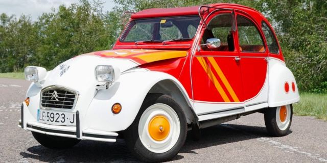
Présentation générale.
La 2CV Marcatelo est une série limitée créée pour
le marché espagnol en 1982, inspirée à l’origine du
concept 2CV Basket.
Elle a été conçue pour célébrer
la Coupe du Monde de football 1982, organisée en
Espagne, avec un look sportif et coloré reprenant
des éléments visuels évoquant l’ambiance du mondial.
Caractéristiques techniques
| Attribut | Détail |
|---|---|
| Pays | Espagne |
| Moteur | 2 cylindres à plat, refroidissement par air |
| Cylindrée | 602 cm3 |
| Puissance | puissance adaptée à une conduite tranquille et économique |
| Vitesse max | performances similaires à celles d’une 2CV6 Spécial classique |
| Transmission | 4 vitesses manuelles |
| Poids | comparable à celui d’une 2CV6 Spécial standard |
| Carburant | Essence |
Particularités de la 2CV Marcatelo
- Série limitée à environ 300 exemplaires, chaque véhicule étant numéroté sur la porte de malle.
- Design très coloré et sportif inspiré par l’ambiance du Mondial 1982 : peinture blanche avec éléments oranges et rouges, capote orange, enjoliveurs oranges, et motifs sportifs.
- Sellerie intérieure spécifique en tissu orange rayé de noir et rouge.
- Logo « 2CV 82 » et décor distinctif sur le hayon pour souligner l’édition spéciale.
- Très rare aujourd’hui, car peu d’exemplaires d’origine ont survécu.
Faits marquants.
Lancée en 1982 pour célébrer la Coupe du Monde de football en Espagne.
Produit en très petit nombre (environ 300 exemplaires numérotés), ce qui en fait une des éditions spéciales les plus rares de la 2CV.
Son design audacieux et sportif en fait un modèle particulièrement recherché par les collectionneurs aujourd’hui.
Partie intégrante des séries limitées européennes lancées dans les années 1980 pour dynamiser l’intérêt autour de la 2CV.
Fourgonnette 2CV AU (1951-1960)
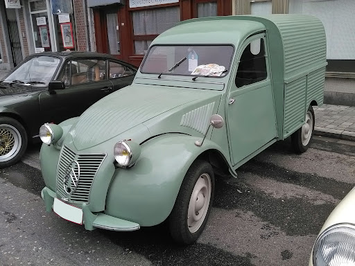
Présentation générale.
La 2CV AU est la première fourgonnette dérivée de la 2CV,
apparue au début des années 1950.
Conçue pour un usage
professionnel et utilitaire, elle conserve la mécanique
simple et robuste de la 2CV, tout en offrant un espace
de chargement pratique avec une carrosserie fermée.
Son objectif principal est l’économie et la fiabilité,
idéale pour les artisans et petites entreprises.
Caractéristiques techniques
| Attribut | Détail |
|---|---|
| Pays | France |
| Moteur | 2 cylindres à plat, refroidissement par air |
| Cylindrée | 375 cm3 à 425 cm3 selon les millésimes |
| Puissance | 9 à 12 ch |
| Vitesse max | ~65-70 km/h |
| Transmission | 4 vitesses manuelles |
| Poids | ~650 kg à vide |
| Charge utile | ~250 kg |
| Carburant | Essence |
Particularités de la 2CV AU
- Version utilitaire de la 2CV avec carrosserie fermée.
- Capacité de charge d’environ 250 kg selon le modèle.
- Conçue pour la fiabilité et la simplicité, avec un intérieur très sobre.
- Très maniable, même avec des routes étroites ou difficiles.
Faits marquants.
Première fourgonnette 2CV produite à partir de 1951.
Usage professionnel ciblé, notamment pour artisans et commerçants.
Robuste et économique, fidèle à l’esprit 2CV.
Base de toutes les fourgonnettes ultérieures (AZU, AK, AKS, etc.).
Fourgonnette 2CV AZU A (1954-1962)
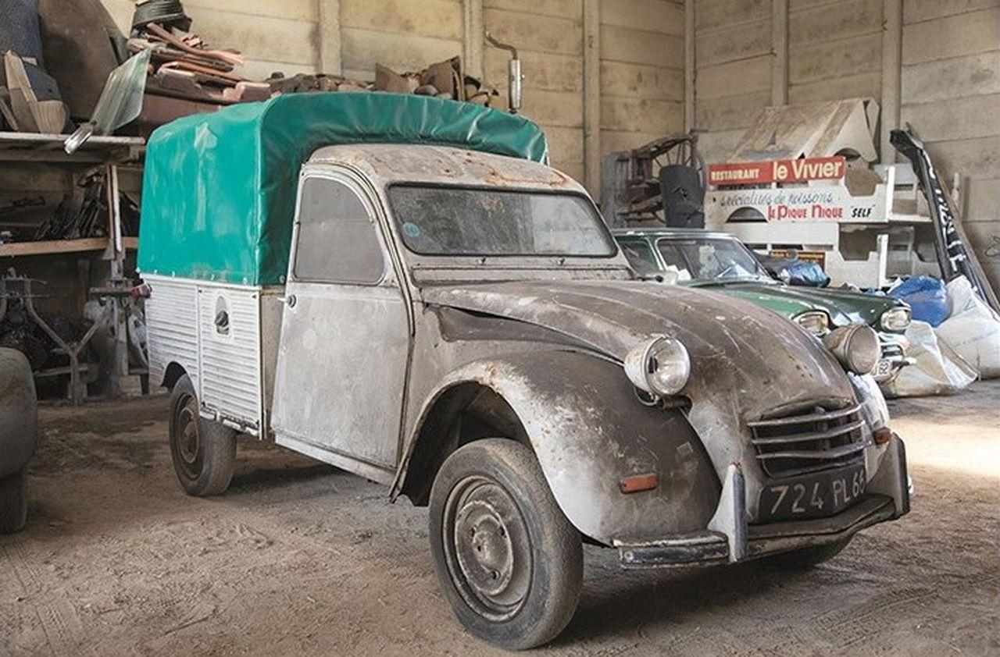
Présentation générale.
La 2CV AZU-A est une fourgonnette utilitaire dérivée de la 2CV,
produite après la 2CV AU.
Elle combine la simplicité et la
fiabilité de la 2CV avec des améliorations mécaniques et
pratiques pour un usage professionnel, offrant un espace
de chargement fonctionnel et maniable.
Caractéristiques techniques
| Attribut | Détail |
|---|---|
| Pays | France |
| Moteur | 2 cylindres à plat, refroidissement par air |
| Cylindrée | 425 cm3 |
| Puissance | 12 à 14 ch |
| Vitesse max | ~70 km/h |
| Transmission | 4 vitesses manuelles |
| Poids | ~620 kg à vide |
| Charge utile | ~250 kg |
| Carburant | Essence |
Particularités de la 2CV AZU A
- Version utilitaire avec carrosserie fermée et capacité de charge autour de 250 kg.
- Améliorations par rapport à l’AU : moteur légèrement plus puissant, meilleures finitions et robustesse accrue.
- Destinée aux artisans, commerçants et petites entreprises.
Faits marquants.
Succède à la 2CV AU comme première fourgonnette améliorée.
Introduit un moteur plus puissant et plus fiable.
Base pour les modèles utilitaires ultérieurs AZU-B et AK.
Très populaire auprès des professionnels dans les années 1950 et début 1960.
Fourgonnette 2CV AZU B (1972-1978)
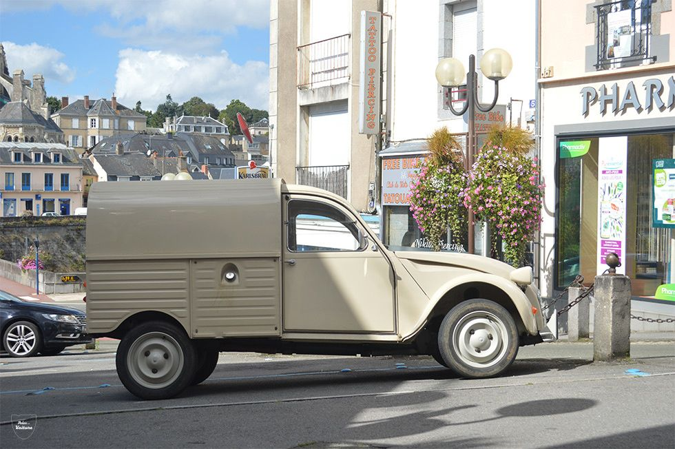
Présentation générale.
La 2CV AZU-B est une fourgonnette utilitaire dérivée de la 2CV,
conçue pour un usage professionnel et léger.
Elle succède à la AZU-A, avec des améliorations
mécaniques et structurelles, notamment un moteur
plus performant et une carrosserie plus robuste.
Elle reste fidèle à l’esprit 2CV :
simple, économique
et fiable, idéale pour les artisans et petites entreprises.
Caractéristiques techniques
| Attribut | Détail |
|---|---|
| Pays | France |
| Moteur | 2 cylindres à plat, refroidissement par air |
| Cylindrée | 435 cm3 |
| Puissance | 14 ch |
| Vitesse max | ~75 km/h |
| Transmission | 4 vitesses manuelles |
| Poids | ~650-670 kg à vide |
| Charge utile | ~250-300 kg |
| Carburant | Essence |
Particularités de la 2CV AZU B
- Version utilitaire avec carrosserie fermée et capacité de charge autour de 250–300 kg.
- Améliorations par rapport à l’AZU-A : moteur plus puissant, carrosserie renforcée, fiabilité accrue.
- Idéale pour les artisans, commerçants et livraisons légères.
- Base des modèles utilitaires ultérieurs comme les AK et AKS.
Faits marquants.
Dernière évolution des fourgonnettes légères 2CV avant les modèles AK.
Introduit un moteur plus puissant et fiable pour des usages plus exigeants.
Très populaire dans les années 1970 auprès des professionnels.
Précurseur des fourgonnettes plus grandes et puissantes (AK/AKS).
Fourgonnette 2CV AK250 (1961-1970)

Présentation générale.
La 2CV AK 250 est une fourgonnette utilitaire suréquipée
et renforcée dérivée de la 2CV.
Elle succède aux modèles
AZU pour répondre aux besoins de transport légèrement plus
lourds et professionnels.
Robuste, simple et économique,
elle conserve la maniabilité et la fiabilité légendaires
de la Deux Chevaux, tout en permettant une charge utile accrue.
Caractéristiques techniques
| Attribut | Détail |
|---|---|
| Pays | France |
| Moteur | 2 cylindres à plat, refroidissement par air |
| Cylindrée | 602 cm3 |
| Puissance | 29 ch |
| Vitesse max | ~95-100 km/h |
| Transmission | 4 vitesses manuelles |
| Poids | ~700-720 kg à vide |
| Charge utile | ~250 kg |
| Carburant | Essence |
Particularités de la 2CV AK 250
- Fourgonnette renforcée pour un usage professionnel plus exigeant.
- Capacité de charge de 250 kg, supérieure aux modèles AZU.
- Amélioration de la suspension et de la structure pour supporter plus de poids.
- Base des modèles AK ultérieurs (AK 350, AK 400, AKS).
- Conçue pour les artisans et petites entreprises nécessitant un utilitaire fiable et économique.
Faits marquants.
Première version AK avec charge utile augmentée par rapport aux AZU.
Moteur plus puissant pour des transports plus exigeants.
Très populaire auprès des professionnels dans les années 1960.
Précurseur des versions AK 350 et AK 400.
Fourgonnette 2CV AK350 (1969-1978)
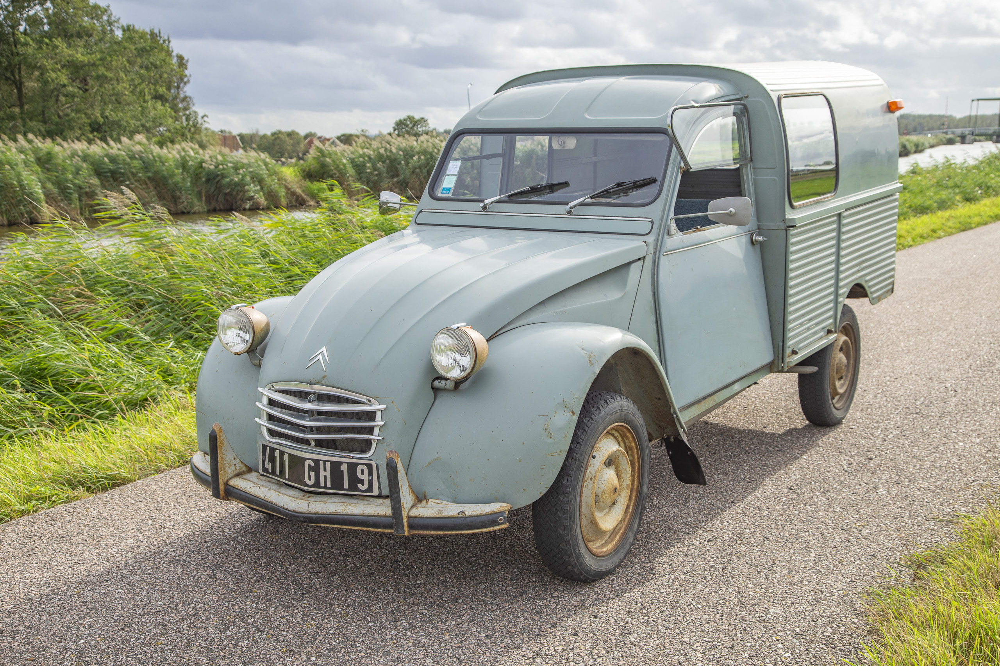
Présentation générale.
La 2CV AK 350 est une fourgonnette utilitaire renforcée dérivée de la 2CV,
conçue pour transporter des charges plus importantes que la AK 250.
Elle conserve la simplicité, la fiabilité et l’économie caractéristiques
de la 2CV tout en offrant une capacité de charge supérieure,
adaptée aux professionnels et aux artisans ayant besoin de
transporter des marchandises plus lourdes.
Caractéristiques techniques
| Attribut | Détail |
|---|---|
| Pays | France |
| Moteur | 2 cylindres à plat, refroidissement par air |
| Cylindrée | 602 cm3 |
| Puissance | 29 ch |
| Vitesse max | ~95-100 km/h |
| Transmission | 4 vitesses manuelles |
| Poids | ~720-740 kg à vide |
| Charge utile | ~350 kg |
| Carburant | Essence |
Particularités de la 2CV AK 350
- Fourgonnette renforcée pour un usage professionnel plus exigeant.
- Capacité de charge de 350 kg, supérieure à la AK 250.
- Carrosserie et suspension adaptées pour supporter le poids supplémentaire.
- Destinée aux artisans, commerçants et petites entreprises.
- Base pour la version AK 400 et AKS 400, plus robustes.
Faits marquants.
Évolution de la AK 250 pour transports plus lourds.
Très populaire auprès des professionnels dans les années 1970.
Maintient la simplicité et fiabilité de la 2CV dans un utilitaire renforcé.
Précurseur de la AK 400 et AKS 400, avec capacité de charge encore plus élevée.
Fourgonnette 2CV AK400 (1970-1978)

Présentation générale.
La 2CV AK 400 est une fourgonnette utilitaire robuste dérivée de la 2CV,
conçue pour transporter des charges plus importantes que les AK 250 et
AK 350.
Elle conserve la simplicité, la fiabilité et l’économie
caractéristiques de la 2CV, tout en offrant une capacité de charge
maximale de 400 kg.
Elle est destinée aux artisans et
professionnels ayant besoin d’un utilitaire fiable et pratique.
Caractéristiques techniques
| Attribut | Détail |
|---|---|
| Pays | France |
| Moteur | 2 cylindres à plat, refroidissement par air |
| Cylindrée | 602 cm3 |
| Puissance | 29 ch |
| Vitesse max | ~95-100 km/h |
| Transmission | 4 vitesses manuelles |
| Poids | ~740 kg |
| Charge utile | ~400 kg |
| Carburant | Essence |
Particularités de la 2CV AK 400
- Fourgonnette renforcée pour supporter une charge maximale de 400 kg.
- Carrosserie et suspension adaptées aux usages professionnels exigeants.
- Destinée aux artisans, commerçants et petites entreprises.
- Version juste en dessous de la AKS 400, qui offre un confort et une finition légèrement améliorés.
- Dernière évolution avant l’arrêt de production et la transition vers la Citroën Acadiane.
Faits marquants.
Capacité de charge maximale de 400 kg, la plus élevée des modèles AK “classiques”.
Très robuste et fiable pour les usages professionnels intensifs.
Base pour la version AKS 400, plus confortable et modernisée.
Dernière fourgonnette 2CV avant la fin de la série AK et l’arrivée de l’Acadiane.
Fourgonnette 2CV AKS400 (1975-1978)
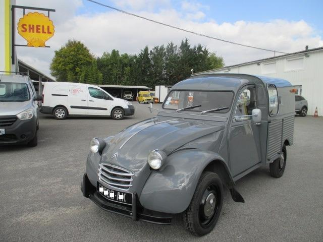
Présentation générale.
La 2CV AKS 400 est la fourgonnette utilitaire la plus
robuste et moderne de la série AK.
Conçue pour un usage
professionnel exigeant, elle combine la simplicité, la
fiabilité et l’économie de la 2CV avec un confort et des
finitions améliorés.
Elle représente le sommet de la gamme
utilitaire légère 2CV avant la fin de production.
Caractéristiques techniques
| Attribut | Détail |
|---|---|
| Pays | France |
| Moteur | 2 cylindres à plat, refroidissement par air |
| Cylindrée | 602 cm3 |
| Puissance | 29 ch |
| Vitesse max | ~95-100 km/h |
| Transmission | 4 vitesses manuelles |
| Poids | ~740-760 kg |
| Charge utile | ~400 kg |
| Carburant | Essence |
Particularités de la 2CV AKS 400
- Version suréquipée et modernisée de la AK 400, avec confort et finition légèrement améliorés.
- Capacité de charge élevée (400 kg), idéale pour les usages professionnels exigeants.
- Carrosserie et suspension renforcées pour supporter les charges lourdes.
- Destinée aux professionnels nécessitant robustesse et fiabilité.
- Dernière fourgonnette 2CV avant l’arrêt de production en 1978 et la transition vers la Citroën Acadiane.
Faits marquants.
Version ultime de la série AK, combinant robustesse et confort.
Maintient la réputation de la 2CV pour la simplicité et la fiabilité.
Capacité de charge de 400 kg, la plus élevée des fourgonnettes 2CV.
Précurseur direct de la Citroën Acadiane.
2CV Sahara (1960-1971)
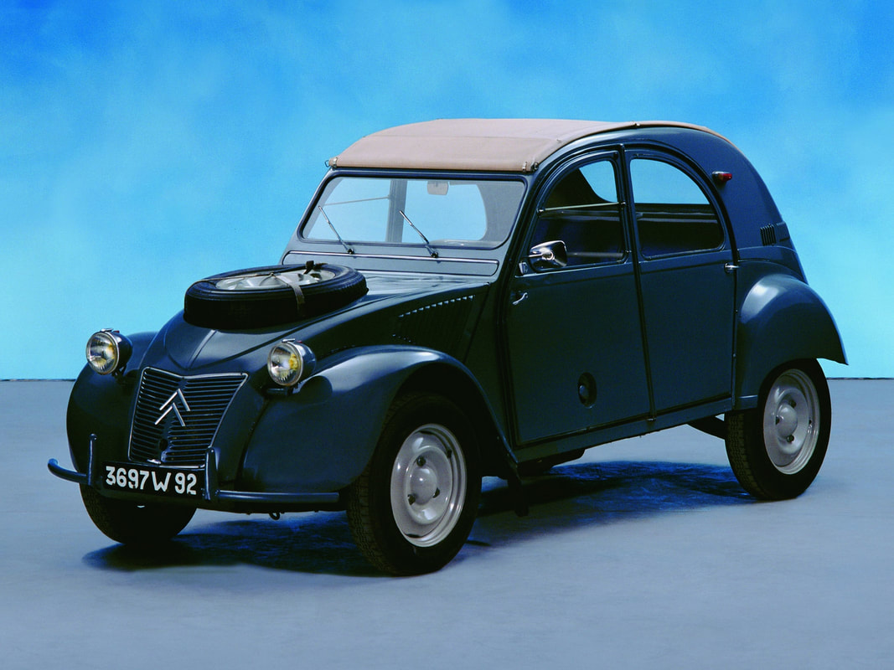
Présentation générale.
La 2CV Sahara est une version tout‑terrain unique de la 2CV,
produite pour répondre aux besoins d’accès à des zones isolées
et difficiles, notamment dans le désert et les régions rurales.
Elle est équipée de deux moteurs indépendants, un à l’avant et un
à l’arrière, permettant une transmission intégrale.
Cette 2CV,
extrêmement robuste, pouvait franchir des terrains très accidentés
tout en conservant la simplicité et la fiabilité caractéristiques de la 2CV.
Caractéristiques techniques
| Attribut | Détail |
|---|---|
| Pays | France mais aussi exportée dans plusieurs pays, comme l'Afrique du Nord et le Moyen-Orient |
| Moteur | 2 X 2 cylindres à plat( un moteur a l'avant et un a l'arrière ), refroidissement par air |
| Cylindrée | 425 cm3 ou 602 cm3 suivant les series |
| Puissance | 12 à 29 ch |
| Vitesse max | ~80-90 km/h |
| Transmission | Transmission intégrale (2 moteurs indépendants), boîte de vitesse manuelle à 4 vitesses sur chaque moteur |
| Poids | ~700-750 kg |
| Carburant | Essence (deux réservoirs séparés) |
Particularités de la 2CV Sahara
- Première et seule 2CV à traction intégrale produite en série limitée.
- Deux moteurs indépendants permettant un usage tout‑terrain extrême.
- Châssis et suspensions renforcés pour résister aux terrains accidentés.
- Capable de franchir des pentes et traverser des sols sablonneux ou boueux.
- Version extrêmement rare et très recherchée par les collectionneurs.
Faits marquants.
Produite en quantités limitées entre 1960 et 1971.
Véhicule emblématique pour les expéditions et les terrains difficiles.
Considérée comme l’une des 2CV les plus originales jamais produites.
Les modèles authentiques sont aujourd’hui très recherchés et précieux.